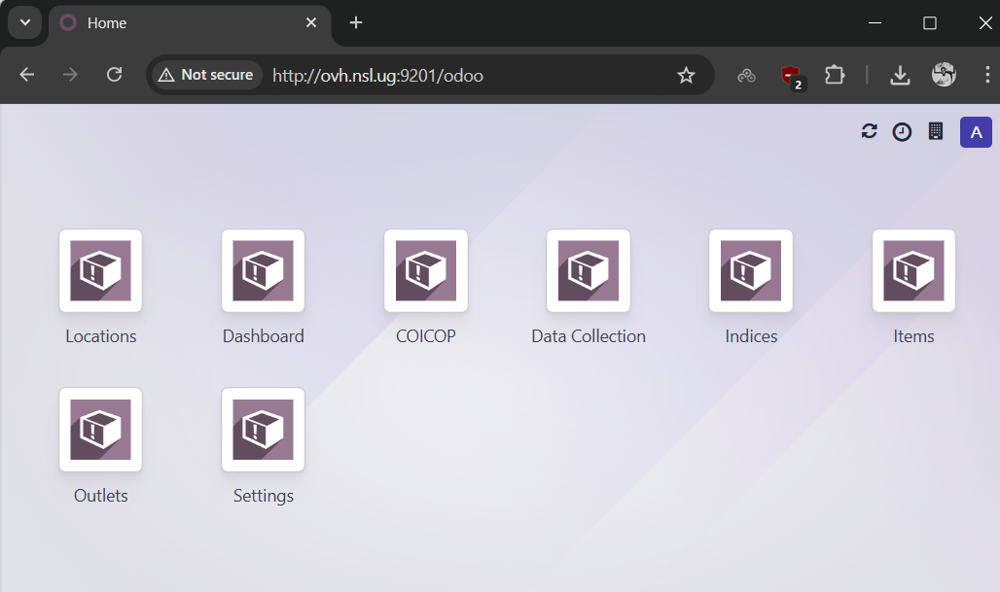
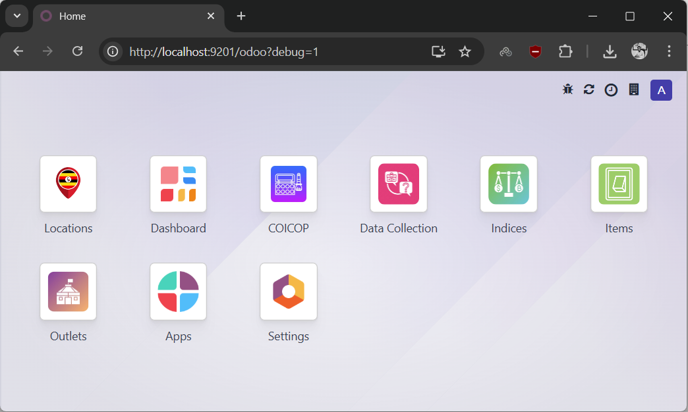

Windows Native Installation
This guide covers installing HCPI directly on Windows without WSL.
Windows Native Installation
Windows native installation works well for development and testing. However, it's not recommended for production deployments. You may encounter a few oddities or minor bugs due to path handling differences and platform-specific behaviors. For production environments, use Linux. If you want the best Windows experience, Windows WSL provides a Linux environment with better compatibility.
Step 1: Enable PowerShell Script Execution
Before installing Python, enable PowerShell to run scripts. Open PowerShell as Administrator and run:
This allows you to run local scripts, which is needed for some installation steps.
Step 2: Install Python
Python Version Requirement
HCPI works best with Python 3.10, 3.11, or 3.12. Python 3.13+ may have compatibility issues with some Odoo dependencies.
Check Current Python Version
First, check if you have Python installed:
If Python 3.13+ is Installed (or No Python)
Click here if you have Python 3.13+ or need to install Python 3.12
If you have Python 3.13 or later, use pyenv-win to install Python 3.12: **Install pyenv-win:** Close and reopen PowerShell, then install Python 3.12: Verify the version:If Installing Python Fresh
Download and install Python 3.12.x from python.org:
- Download the Python 3.12.x Windows installer
- Important: Check "Add Python to PATH" during installation
- Complete the installation
Verify installation:
Step 3: Install PostgreSQL
Download and install PostgreSQL from postgresql.org:
- Download the Windows installer (version 12 or later)
- During installation:
- Remember the password you set for the
postgresuser - Default port is 5432 (keep this unless you have conflicts)
- Install pgAdmin 4 (helpful for database management)
- Complete the installation
Add PostgreSQL to your PATH:
1. Open System Properties → Environment Variables
2. Edit Path variable
3. Add: C:\Program Files\PostgreSQL\15\bin (adjust version number as needed)
Step 4: Install Git
Download and install Git from git-scm.com:
- Download and run the installer
- Use default options during installation
Step 5: Install wkhtmltopdf
Download and install wkhtmltopdf from wkhtmltopdf.org:
- Download the Windows installer
- Install to default location
- Add to PATH:
C:\Program Files\wkhtmltopdf\bin
Step 6: Set Up PostgreSQL Database
Open Command Prompt as Administrator and create user and database:
Enter the postgres password you set during installation. Then in the PostgreSQL prompt:
CREATE USER hcpi WITH PASSWORD 'your_secure_password';
CREATE DATABASE hcpi OWNER hcpi;
GRANT ALL PRIVILEGES ON DATABASE hcpi TO hcpi;
\q
Database User
We're using hcpi as both the database name and username. You can choose different names, but update the configuration file accordingly.
Step 7: Create Directory Structure
Open Command Prompt or PowerShell and create the directory:
Command Prompt:
PowerShell:
Custom Installation Path
If you choose a different path than C:\hcpi, you'll need to update the paths in the configuration file (see Step 8).
Alternative Location
While the Linux version uses /opt/hcpi, on Windows we use C:\hcpi for simplicity. You can choose a different location if preferred.
Step 8: Download and Set Up HCPI Files
Download files from http://statistics.ubos.org/hcpishare and set up:
- Download
hcpi-files.zip - Extract contents to
C:\hcpi
Clone Odoo 18 and create log directory:
Command Prompt:
PowerShell:
Set-Location C:\hcpi
git clone --depth 1 --branch 18.0 https://github.com/odoo/odoo.git
New-Item -ItemType Directory -Path log
You should now have:
C:\hcpi\
├── conf\ # Configuration files (from hcpi-files.zip)
├── custom\ # Contains HCPI module (from hcpi-files.zip)
│ └── HCPI\ # Main HCPI module
├── log\ # Log files (created)
├── odoo\ # Odoo 18 codebase (cloned)
└── venv\ # Python virtual environment (will create next)
Step 9: Set Up Python Virtual Environment
Open Command Prompt in C:\hcpi:
Your prompt should now show (venv).
Install dependencies:
python -m pip install --upgrade pip
pip install wheel
pip install numpy
pip install -r odoo\requirements.txt
Installation Issues
If you encounter errors installing some packages, you may need to install Visual C++ Build Tools from Microsoft.
NumPy Requirement
NumPy is required for HCPI but not included in Odoo's default requirements, so we install it separately.
Step 10: Configure Odoo
The configuration file is already provided in C:\hcpi\conf\hcpi.conf. Review and update the following settings:
Edit with a text editor (Notepad, VS Code, etc.) and adjust these key settings:
Key settings to update:
[options]
; Change this to a strong password for database management operations
admin_passwd = your_strong_admin_password
; Windows requires explicit host
db_host = localhost
db_port = 5432
; Set this to match the PostgreSQL password from Step 5
db_password = your_secure_password
; UPDATE THESE PATHS if you installed to a different location - use backslashes (\)
addons_path = C:\hcpi\odoo\addons,C:\hcpi\custom\HCPI
logfile = C:\hcpi\log\hcpi.log
; Change this if port 9201 is already in use
http_port = 9201
Important Windows-Specific Settings
- admin_passwd: Used for database management operations - choose a strong password
- db_password: Must match the PostgreSQL password you created in Step 5
- db_host: Must be
localhoston Windows (unlike Linux where it can beFalse) - Paths: Must use backslashes (
\), not forward slashes (/) - Paths location: Update
addons_pathandlogfileif you chose a different installation location - http_port: Change if port 9201 is already in use
Step 11: Restore Database (Optional)
Option A: Start with Sample Data
If you want to start with existing data:
- Download and extract
hcpi-db.zip - Open Command Prompt or PowerShell and run:
Command Prompt:
PowerShell:
Enter the hcpi user password when prompted.
Windows Restore Issues
The -v ON_ERROR_STOP=0 flag prevents the restore from stopping on minor errors (common when restoring Linux dumps on Windows). Errors are logged to restore_errors.log for review. Most errors related to permissions or Linux-specific features can be safely ignored.
Option B: Start with Empty Instance
Simply skip this step. Odoo will initialize the database when you first run it with the -i HCPI flag (see Step 12).
Step 12: Start HCPI
Open Command Prompt in C:\hcpi:
For first-time setup with empty database:
This ensures icons and assets are properly generated on the first run.
First-Time Startup
The first time you start HCPI, it may take a few minutes to initialize. Be patient during the initial load. Subsequent starts will be much faster.
Step 13: Access HCPI
Open your web browser and navigate to:
Or if you changed the port in the configuration, use that port instead.
Checking the Port
If you're unsure which port HCPI is running on, check the configuration file or look for a line in the logs that says "HTTP service (werkzeug) running on..."
First Load May Be Slow
The first time you access HCPI, the page may take 30-60 seconds to load as it initializes the interface. After this initial load, performance should be normal.
Fix Missing Icons
If you notice missing icons in the interface after installation:
Before (missing icons):

To fix:
- Click on your username in the top right
- Go to Settings → Activate the developer mode
- Then go to Settings → Technical → User Interface → Regenerate Assets Bundles
- Refresh the page
After (icons restored):

Alternatively, you can restart HCPI with the asset regeneration flag:
Creating a Startup Batch File
Create C:\hcpi\start-hcpi.bat:
Now you can double-click this file to start HCPI.
Running as a Windows Service (Advanced)
For production-like setup, you can run HCPI as a Windows service using NSSM (Non-Sucking Service Manager):
- Download NSSM from nssm.cc
- Extract and open Command Prompt as Administrator
- Navigate to NSSM directory
- Run:
Configure:
- Path: C:\hcpi\venv\Scripts\python.exe
- Startup directory: C:\hcpi
- Arguments: odoo\odoo-bin -c conf\hcpi.conf
Troubleshooting
Python Not Found
Ensure Python is in your PATH:
PostgreSQL Connection Errors
Check if PostgreSQL service is running:
- Open Services (Win+R → services.msc)
- Find "postgresql-x64-15" (version may vary)
- Ensure it's running
Database Connection Failed
Make sure db_host is set to localhost in the config file (not False like in Linux).
Module Import Errors
Ensure virtual environment is activated:
Port 9201 Already in Use
Change the port in conf\hcpi.conf:
Check Logs
Open C:\hcpi\log\hcpi.log in a text editor to see error messages.
Module Not Found
Verify the addons_path in the config file uses Windows paths:
Antivirus Interference
Some antivirus software may block Odoo. Add C:\hcpi to your antivirus exclusions if you experience issues.
Path Issues
Make sure all paths in hcpi.conf use backslashes (\), not forward slashes (/).
Known Limitations on Windows
- Some Odoo modules may have compatibility issues with Windows
- Performance may be lower compared to Linux
- File path handling differences may cause minor issues
- Some system-level features may not work identically to Linux
Next Steps
- Review the Odoo 18 documentation
- For a more production-like environment, consider using Windows WSL
- Configure HCPI modules for your needs
- Set up regular database backups using pgAdmin or command-line tools
- Configure user accounts and permissions in HCPI